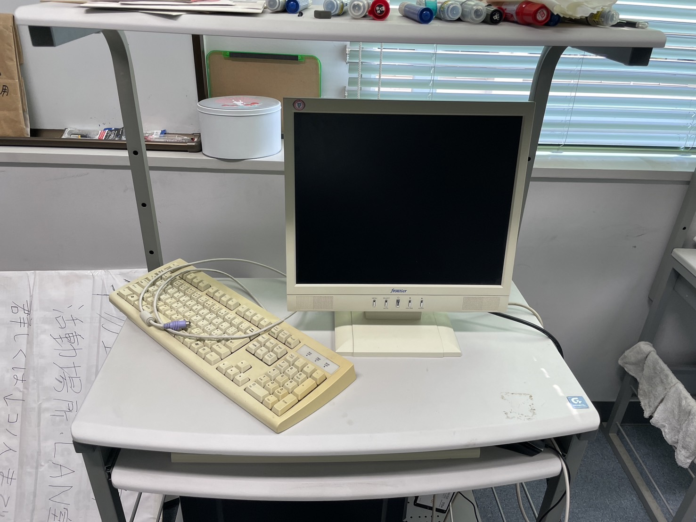
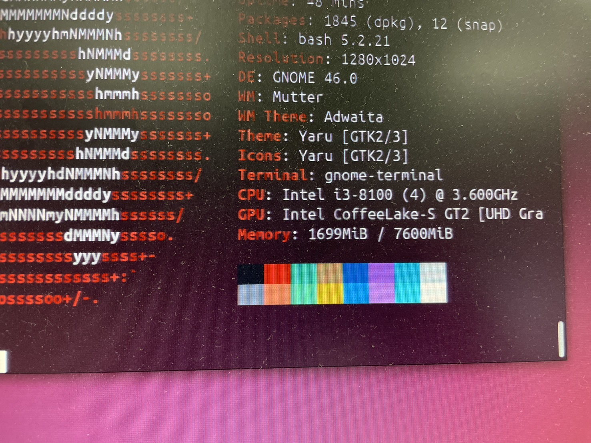
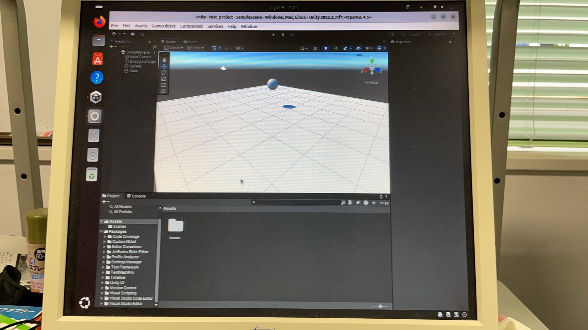

138期の活動について
デスクトップPC
138期の入部以前から教室の隅でひっそりと佇んでいたデスクトップPC。

やけに古い出力と入力
顧問の先生に伺った話では、昔の先輩たちが組んだものだそうです。
興味本位でログインを試みましたが、windowsのパスワードがわからないので断念。
そこで、Linuxユーザーのある部員の提案で、UbuntuをインストールしたSSDから起動して使うことになりました。
Terminalでneofetchコマンドを打って性能を確認

悪くはなさそうです。
せっかくなのでUnityをインストールして、PCを持っていない部員が使用したり、六稜祭の展示で使用するためのPCにしました。

後輩にLinuxを布教する口実ができました
ポスター
六稜祭でゲームを展示するにあたって、自治会から大ポスターポスター制作の機会を頂いたので、モデリングしたマップとレーシングカーをblenderで撮影してpng画像を出力し、
kritaを使用して仕上げました。


物理研究部の新しいロゴはこのとき作られました。
公式サイト
六稜祭終了後に一年生と話し合い、昨年とは異なり六稜祭に時期をあわせない制作を始めました。
そのタイミングで、顧問の先生から「制作物を六稜祭以外でも積極的に公開したらどうか」との提案を受けたので、
制作物を閲覧したり遊んだりできる機能を内包した公式サイトを作り、github pagesを活用して公開することになりました。
私の認識が正しければ、github pagesは容量が1GBを超えると有料になるので、いずれは料金を払うか、サーバーをレンタルするか建てる必要があると考えています。
ということは..Linuxが使われる...?
公式X
138期より前の物理研究部には2つの公式Twitterアカウントが存在したのですが、
物理研究部は
— 北野高校物理研究部 (@KitanoPhysics) March 23, 2015
各々が情報関係の好きなことをしています
例えば、ゲームや動画を作ったり、
情報の国家試験の勉強をしたり、
情報オリンピックに向けて練習をしたり、など
自分がやりたいと思うことに
いきいきと取り組むことができます pic.twitter.com/6WXLdgR7Gn
使われなさすぎて部室に草超えて蔦生えてるんですけど... pic.twitter.com/SPsggO3YTa
— 北野高校物理研究部 (@kitano_bukken) September 7, 2020
アカウントの引き継ぎに失敗していたようなので、3つ目のアカウントを作成して運営し始めました。
三度目の正直ということで、このアカウントは引き継いでいってほしいと思います。今日から仮入部やっています！！
— 北野高校物理研究部 (@R_physics_club) April 8, 2024
2階、LAN教室でお待ちしております！
139期の皆さん是非！お越しください！ pic.twitter.com/LoN3Nztrce
随時更新しています
138期は現在活動中です。 なにかあれば不定期で更新していきます。